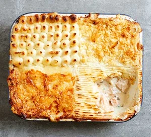

Next level fish pie

Description
Generous chunks of fish in a creamy sauce made with a few secret ingredients, topped with buttery mash and a crispy garnish. Take fish pie to the next level
Ingredients
- 150g butter
- 1 shallot, finely chopped
- 400g shell-on raw prawns, peeled, heads and shells kept for stock
- 400g smoked haddock, skinned and trimmed (reserve these), flesh diced into large chunks
- 1 bay leaf
- 1 star anise
- small splash Pernod (optional)
- 150ml white wine
- 1.2l whole milk
- 1 tsp vegetable bouillon powder or 1 vegetable stock cube
- 60g plain flour
- 200ml low fat creme fraiche
- 400g skinless white fish fillet, diced into large chunks
- 2 tbsp capers, drained and finely chopped
- 1 lemon, juiced
- 1.5kg King Edward potatoes
- 4 eggs (optional)
- gruyere or medium cheddar
- 40g pack ready salted crisps
- spinach, peas or watercress, to serve
Steps
- Heat 25g of the butter in a shallow pan and sizzle the shallot for 2 mins. Add the prawn heads, shells and smoked haddock skin and trimmings, turn up the heat and cook for 5 mins until they start to brown. Throw in the bay and star anise, then splash in the pernod if using and then the wine. Boil everything down until practically evaporated, then pour over 1 litre of milk and sprinkle in the vegetable bouillon. Simmer everything for 15 mins, turn off the heat, crush the shells with a potato masher and strain into a jug.
- Clean out the pan and melt 60g of butter, stir in the flour so you have a sandy paste and cook for 2 mins on a low heat. Gradually stir in the flavoured milk, then the crème fraîche, and simmer gently to make a very thick sauce. Season to taste. Turn off the heat and gently fold through all the fish and prawns, capers and lemon juice. Scrape into a large buttered baking dish.
- Heat oven to 220C/200C fan/gas 8. Bring the potatoes to the boil in a large pan of water, add the eggs and simmer for 8 mins. Scoop out the eggs, put in a bowl of cold water to cool, then peel, halve and push into the sauce. Drain the potatoes and mash with the remaining milk and butter. Spread or pipe the mash over the pie. Sprinkle with gruyère and/or crush over crisps. Put the pie on a baking tray and cook for 35 mins until golden and just bubbling over. Leave to sit for at least 10 mins before eating with buttered spinach, peas or watercress.